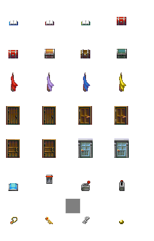

prj/lib/ObjectFactory.ts）prj/lib/ObjectEntity.ts）prj/03.lib_object_object/src/main.ts）npm run debug # access to http://localhost:3000

prj/lib/ObjectFactory.ts）/**
* 前提：アセットが読み込まれていること
*
* - 各種画像：/assets/image/obj/
* - book: /assets/image/obj/books.png
* - chest: /assets/image/obj/chests.png
* - flag: /assets/image/obj/flags.png
* - door: /assets/image/obj/doors.png
* - switch: /assets/image/obj/switches.png
* - treasure: /assets/image/obj/treasures.png
*/
const scene = new g.Scene({
game: g.game,
assetPaths: ["/assets/**/*"]
});
/**
* 適切にアセットが読み込まれていれば、名前を指定してインスタンスが取得できる
* 名前は`object_settings`（`ObjectEntity.ts`内）を参照
*/
const obj = ObjectFactory.getObjectObject("blue_book");
prj/lib/ObjectEntity.ts）// ObjectFactory 参照
const obj = ObjectFactory.getObjectObject("blue_book");
// オブジェクトのアニメーションなどを指定する
obj.setAction("flip");
// 当たり判定のサンプルコード
const hit = g.Collision.intersectEntities(rect, obj.getHitArea());
rect.cssColor = hit ? "yellow" : "black";
rect.modified();
prj/03.lib_object_object/src/main.ts）画面参照